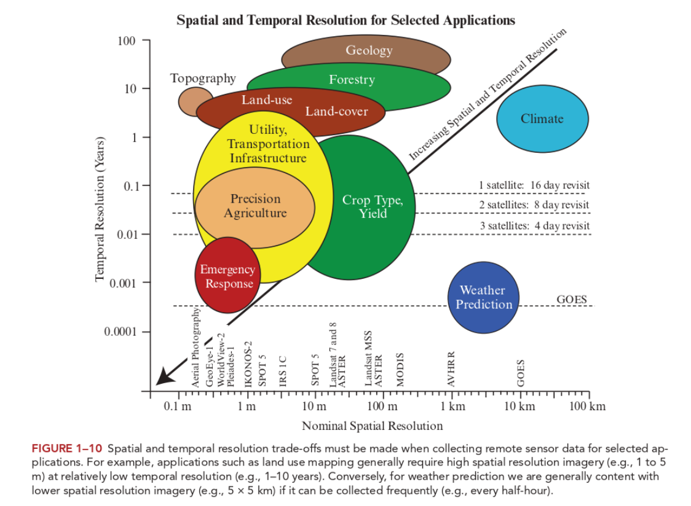

2 Introduction
Week1: 10&12/Jan/2024
This week’s lecture introduces passive and active sensors and the four resolutions of remote sensing data (and many other concepts!). The practical describes basic workflow of analyzing Earth Observation (EO) data using SNAP and QGIS. An example of analyzing color composite using SNAP is included at the end of this section.
2.1 Summary
2.1.1 Sensors
Passive sensors (aka. Optical sensors) are like human eyes/cameras that do not emit Electromagnetic (EM) waves itself. EM waves from solar radiation (thermal energy) are reflected, transmitted or absorbed by objects/surfaces and satellites (e.g. WorldView-3 in Week2 entry) (passively) capture that naturally available energy from existing source.
Active sensors (aka. Radar sensors) emit and receive EM wave / energy like radar and x-ray. The changes in return signal are detected. Examples include Synthetic aperture radar (SAR) and Light Detection and Ranging (LiDAR).


2.1.2 Four types of resolutions
- Spatial resolution
-
The size of the raster grid / pixel in terms of Earth’s surface area (e.g. 20cm: each grid is 20cm by 20cm area on the ground).
Trade-off between time, costs and spatial resolution: Low spatial resolution data usually has shorter revisit time; while high spatial resolution data is finer, more detail but costly.
- Spectral resolution
-
The ability of the sensor to distinguish finer wavelengths, i.e. more and narrower bands.
Objects on Earth have different spectral signatures (reflectance/emittance as a function of wavelength), which can be measured via multiple approaches like spectrometre. At high spectral resolution meaning more bands, distinctions can be made between rock and mineral types, vegetation types, and other features.
Multispectral data = 3-10 bands
Hyperspectral data (stack all colour bands) = hundreds to even thousands of bands
Both active and passive techniques work with wavelength ranges contained in the atmospheric windows (where Earth’s surface receive EM energy from the Sun, and for thermal radiation from the surface to leave to space).
(Source: National Weather Service)
- Radiometric resolution
-
The amount of information in each pixel, that is, the number of bits representing the energy recorded (e.g. 8 bit: 28 (256) potential digital values (0-255) to store information).
Higher bits, more possible values, more capable of discerning subtle differences in light or reflectance (reduce sharpness, more like gradient changes in colour)
Sentinel-2 is 12-bit (brightness levels from 0 – 4095) (beyond True Colour Image (TCI) values)
- Temporal resolution
-
The time it takes for a satellite to complete an orbit and revisit the same observation area.
Considering the trade-off between resolution and time (and cost), the choice of sensors depends on the purpose of the analysis.

2.1.2.1 Sentinel and Landsat
| Sentinel-2 | Landsat (8-9 OLI and TIRS) | |
|---|---|---|
| Spatial resolution | Resolutions vary for each bands (e.g. 10m resolution for Band 2) | 30m resolution |
| Temporal resolution | 10 days (5 days for combined constellation 2A & 2B) | 16 days |
| Spectral resolution | 13 spectral bands | 9 spectral bands |
| Central wavelength | B1 443nm = Band 1 has central wavelength of 442 nm |
- Sentinel tends to have shorter download time than Landsat.
- Landsat has less available data in a given time range (due to slightly longer revisit time).
2.1.3 Pre-processing workflow in SNAP
Download > New project in SNAP > Save downloaded file in a Data folder in the same directory as the project > Open product/zipped data > Select RGB-image channel (on product explorer panel right click product) > Fig. a,b,c
To inspect/change image display: -> Colour Manipulation panel (View -> Tool Windows) -> Change the range of histogram
To analyse spectral feature space: -> Scatter plot (under Analysis tab) => Fig. d
To mask the study area: -> Resampling to 20m (since both masking and the Tasseled Cap function require same resolution while B2/B3/B4/B8 are 10m and B11/B12 are 20m) -> Import vector (ESRI shapefile) -> Select the imported layer in layer manager -> Masking under Raster - Masks - Land/Sea Mask (select bands that would be used)
To reduce dimensionality via Tasseled Cap transformation : -> Apply transformation functions in Band Math -> Select RGB-image channel => Fig. e,f
Since Landsat has different spatial resolution than Sentinel, the latter will be resampled again (upscale). And since the Sentinel data has been masked/selected useful bands for Tasseled cap, it will be masked again to select B1-B7.
To compare spectral reflectance: -> Make sure both data in the same resolution with the same bands -> Add polygons by land cover -> Export polygons as shapefiles -> Export both dataset as GeoTIFF -> Check in QGIS -> Compare in R using terra (or stars) => Fig. g,h & Table 1
| Process by Software | SNAP |
| Colour composite | recreate by changing RBG channels (Fig. a, b, c) |
| Enhancement | Image histogram |
| Spectral feature space | Scatter plot (Fig. d) |
| Resampling | B11 and B12 are at a 20m resolution whereas all the others at a 10m resolution. -> resample others to 20m (upscale) Sentinel 2 resampling toolbox A) Traditional resample: considers the neighbouring pixels (time-efficient?) B) Sentinel 2 products resample: account for the particularities of the angle (satellite viewing) bands |
| Masking | Masks. Land/sea mask. Can only mask bands on the same resolution |
| Tasseled Cap function | Band Maths. Reduce dimensionality: (similar to PCA) spectral index combining two or more bands to highlight certain features of an image. Then change RGB channel to those new data to show results (Fig. e) |
- QGIS can conduct similar analysis. For instance, colour composite can be set by merging the BOA bands (B2, B3, B4, B8 to make true colour composite (B1=Blue, B2=Green, B3=Red))
2.1.3.1 Masking vs. cropping
- Masking
-
The outline of the geographic boundary
- Cropping
-
To the extent, the rectangular parameter of the geographic boundary
2.1.3.2 Case study: Kinmen County
I’ve chosen Kinmen County in Taiwan as my case study area for this week’s practical. It consists of several islands and is in close proximity to Xiamen, mainland China. The main/largest island is the H-shaped one at the lower end of the first few maps (or see Fig e).
This is where i spent the majority of summer in 2022 so i’ve got some knowledge of the city/island’s land use. I also cycled a lot here (so having some sense of the topography). There is less traffic and a abundance of greenery. However, it tends to be slightly cloudy/rainy in certain months which may constrain remote sensing analysis.
The initial exploration using Sentinel data:


False colour composite: B8, B4, B3. Plants reflect near-infrared and green light whilst absorbing red.
Atmospheric penetration composite: B12, B11, B8A with no visible bands to penetrate atmospheric particles. Vegetation = blue, urban area = white, gray cyan or purple.
Three maps show that Xiamen’s built-up areas are mostly close to the seashore (in fact most cities in eastern China are coastal). This is mainly due to its historical ports that are open to international trades and thus becoming more urbanized. Kinmen Islands are less populous compared to Xiamen and the majority of land is bare soil / vegetation. Fig d shows that the dry bare soil is prominent in some areas (black dots at high B4 and high B8), while the image has large ratio of biomass (yellow peak at low B4 and high B8).
- Tasseled Cap function
-
The function is originally designed to monitor crop’s life cycle / changes through time (Source: ArcPro).
Brightness = bare or partially covered soil, man-made, and natural features such as concrete, asphalt, gravel, rock outcrops, and other bare areas
Greenness = green vegetation
Wetness = soil moisture, water, and other moist features.


Darker blue and red areas are generally unchanged - representing water (lakes/reservoir/sea), soil and built-up area. The pink areas are built-up areas / concrete / asphalt / human-made (e.g. southern inner bay’s long linear shape is the airport, and western area on the main island is the most populous town)
Greenness in Fig e is less than that in Fig f, indicating the vegetation is less in May. During May (or generally spring time), there should be roughly similar amount of vegetation / crops, compared to November (autumn), while the crops during autumn reach maturity leading to more greenness in the latter figure.
It might also be the case that the light blue areas are soil moisture / higher humidity. As can be seen from both figures, the shaded blue areas in the central/slightly eastern-central location of the largest island is mountainous. The humidity can be higher there.
Another difference between the two images is that the redness is more intense in the first figure (more NIR), while more organgy in the second. This indicates that the those areas are soil or bare areas. During autumn, the vegetation on those land increase, so the yellowness/greenness overlays.
To mitigate the atmospheric effects (cloudy and foggy from April to May and rainy during summer) and due to data availability, the sensing time for Landsat is in December.


The ranges of the datasets are different visually. Landsat has higher mean reflectance for all land cover in all bands.
For both sensors, the relationship between each land cover is similar. Water, forest and grass have lowest reflectance, and albeit less visible in Sentinel, bare earth has the highest reflectance.
Then, t-test is conducted to test the difference mean land cover reflectance between two sensors.
| landcover | t | df | p-value |
|---|---|---|---|
| low_urban | -129.55 | 2224.5 | < 2.2e-16 |
| high_urban | -289.79 | 7115.3 | < 2.2e-16 |
| bare_earth | -223.36 | 7141.2 | < 2.2e-16 |
| grass | -71.533 | 674.71 | < 2.2e-16 |
| forest | -256.12 | 7799.9 | < 2.2e-16 |
| water | -175.3 | 270.91 | < 2.2e-16 |
Since p-values are all below 0.05, the difference in average reflectance of Landsat and of Sentinel data is statistically significant.

Fig i from NASA shows that spectral bands are similar between Landsat 8 and Sentinel-2, except TIRS. Hence, the comparison above is possible. However, the atmospheric transmission varies. Sentinel bands have higher atmospheric transmission rate (white areas) and relatively low reflectance across all land cover type. Conversely, most Landsat bands are in atmospheric windows (gery areas), which allow energy to pass through the atmosphere, thus resulting in higher reflectance.
{kind=link}
2.1.4 QGIS vs. SNAP
QGIS
SNAP
Two software can work together (using QGIS to check everything as did in CASA0005).
2.1.5 Question
- Why in the practical book before Landsat when resampling Sentinel, the equation for brightness does not include B11 and B12 (but using 0.5082 and 0.1863)?
- A: It should be B11 and B12.
- Fig e looks different in terms of colour scheme? Since the majority of the island is coloured in blue, what do the blueish areas represent? Physically those areas are vegetations/forests, shouldn’t those be in green?
- A: The colour depends on the colour gun set via the RGB. Also, another possible explanation would be the soil contains high amount of moisture. Hence, requirements for accurate understanding of LULC is either field work at the time of data collection or accurate spectral signature of the object/features or the huge abundance of knowledge to the local geography.
2.2 Application
One more question would be what possible factors contribute to the difference in mean reflectance analysed above and how to mitigate the difference. Apart from the atmospheric window discussed above, the temporal difference in the sensing date (19th November 2022 for Sentinel and 19th December 2022 for Landsat) might contribute to difference in atmospheric effects and in path radiance / noise from sky irradiance and radiance from surrounding areas. Hence, to increase data consistency and reduce reflectance difference for similar sensors, removing atmospheric effects and noise is needed. This could be done through linear regression methods (e.g. to get surface reflectance for Sentinel using radiometric calibration method mentioned in Week3). Moreover, Time-series-based Reflectance Adjustment (TRA) approach is developed to mitigate the drawbacks of fixed/global band transformation coefficients by considering difference in land cover type and locations (Shang and Zhu 2019a).
2.3 Reflection
EO data availability depends on cloud cover, time, weather (sometimes study areas may not have data under the filtered criteria). There are methods to overcome this issue after manually selecting the cloud% when downloading/sourcing the data mentioned in following weeks, but possible downsides of this would be the possibility of over-correction (remove too much of the image data, resulting in loss of information and reduced accuracy); misidentification of clouds in cloud-free areas; or the sensitivity to geographical conditions (atmospheric conditions, terrain, or land cover may affect performance in different regions or seasons). And the set cloud% still may not be ideal for the time range targeted. SAR data would be a valuable addition to cope with this (Andy’s lecture in Week9).
There were so many wrong decisions made when producing this analysis. Without solid understanding of concepts/theories, the practical is like a maze 👾. It would be more efficient to do the practical after fully understanding every concept and data (although it is also rewarding to discover and learn from mistakes..). For instance, when comparing the spectral reflectance of Landsat and Sentinel, i selected band 1 to 7 for both sensors at first. However, after reading the paper by Shang and Zhu (2019b), i realized the wavelength ranges/band numbers are different for both sensors (e.g. NIR is band 5 in Landsat while 8A for Sentinel.) After modifying this mistake, the overall patterns do not change much, albeit slight difference in t-statistics.